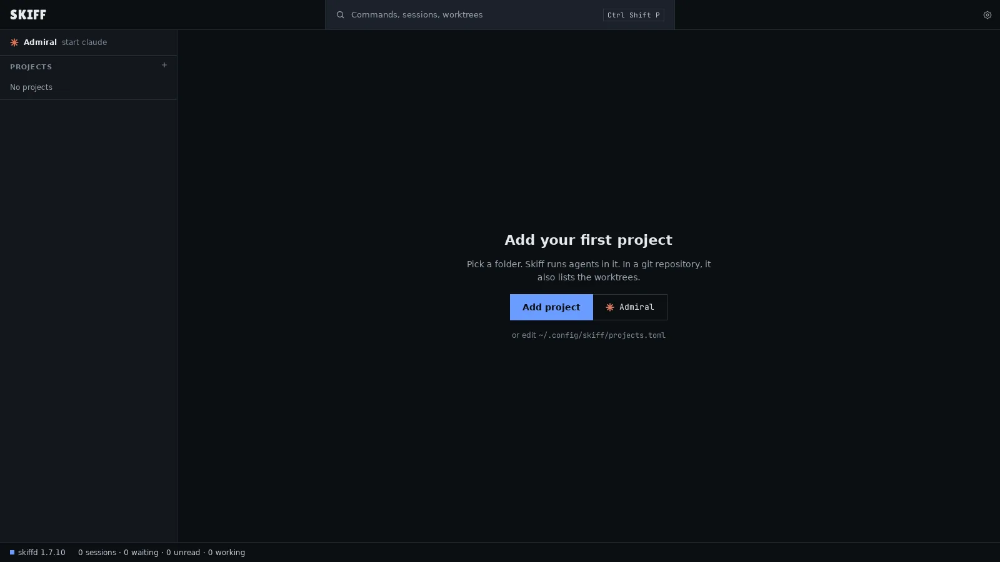
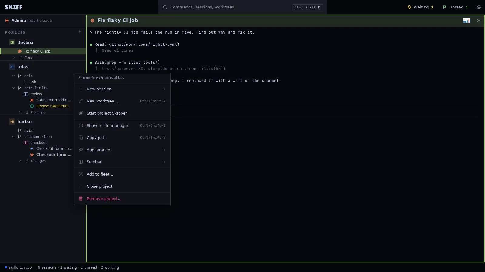
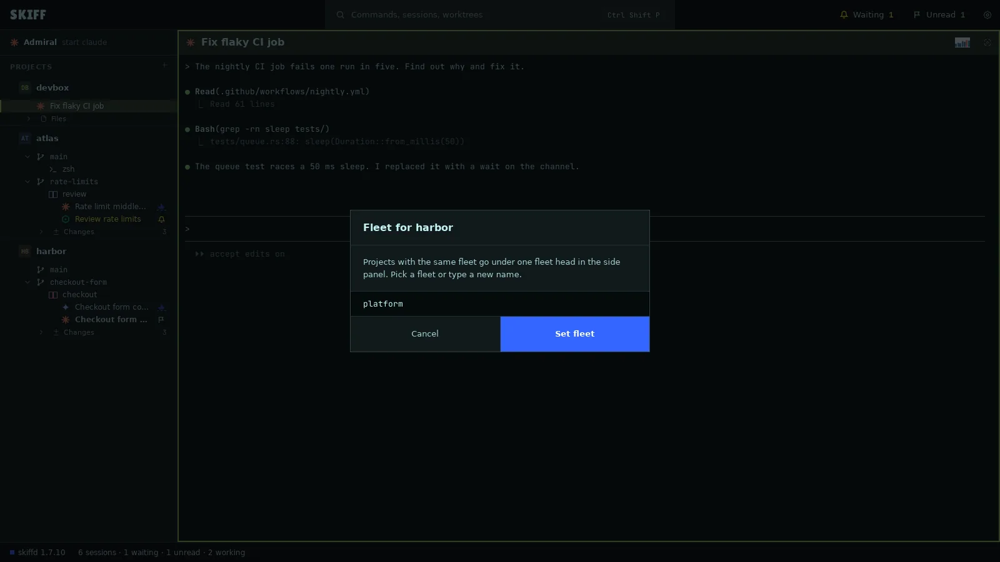
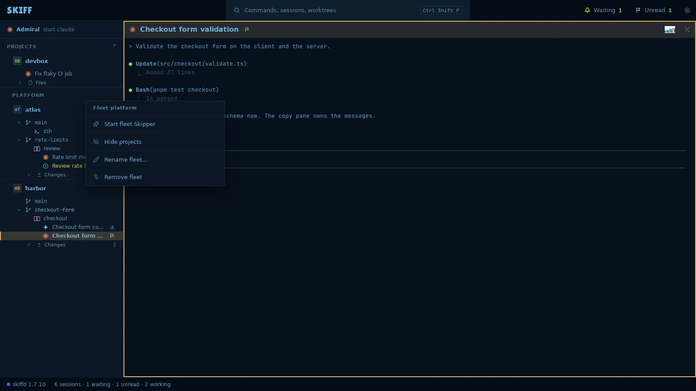
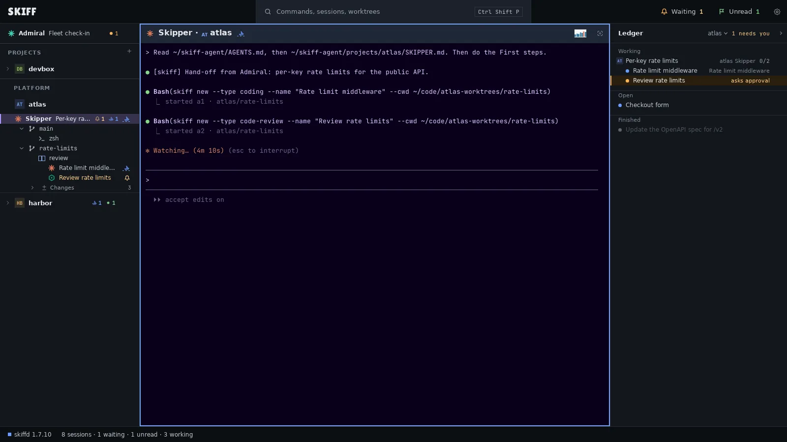

Skiff
SkiffProjects, fleets and the first start
A project is a folder: a Git repository or a plain folder. Projects sit in the side panel on the left. A fleet is a named set of projects with one head in the panel. Admiral and the Skippers work across them.
Chapter 2 of 9 · Skiff user guide
Add projects
- On first start, click Add project in the middle of the window. Later, point at the PROJECTS head in the side panel and click its +, or press Ctrl+Shift+O.
- Pick the folder in the file dialog.
- The project appears in the panel with its name, its initials and a color. A Git repository lists its worktrees under it. A plain folder lists its files.
- The main area reads atlas is ready, with a button for a shell and for each agent. Click one to start a session in the main worktree, or make a worktree first.

Make a worktree
- Point at the project row and click its ⋯, or right-click the row.
- Click New worktree…, or press Ctrl+Shift+N with the row current.
- Type a branch name and click Create. Git makes the branch and checks it out in its own folder next to the project. The worktree appears as a row under the project.

Close project takes a project out of the panel and keeps its settings. File › Open closed project… brings it back. Remove project… drops it from the settings. Both leave the folder on disk.
Create fleets
- Open the project menu and click Add to fleet….
- Type a fleet name, or pick one from the list under the field. Click Set fleet.
- The project moves under a head with the fleet's name. Do the same for the other projects of the fleet. On a project that has a fleet, the item reads Move to fleet…, and No fleet: back under Projects takes it out.
- Or drag one project row onto the middle of another. Skiff makes a fleet of the two and asks for its name under the head. Drag a project onto a fleet head to add it there, or onto the PROJECTS head to take it out.

The fleet head
- Click the head to fold or open the fleet. Point at it to see its +, which adds a project to the fleet, and its ⋯, which opens the fleet menu. A right-click opens the menu too.
- Hide projects keeps only the fleet Skipper, the sessions that wait, and the session on screen under the head. The head counts the hidden sessions. Click the item again, or the count, to show them.
- Rename fleet… renames it. Remove fleet keeps the projects and takes them out of the fleet.
- Drag a fleet head to move the whole fleet before or after another fleet.

Start Admiral and the Skippers
Admiral
- Click the Admiral row at the top of the side panel, or press Ctrl+Shift+L. The row reads start claude, or the agent you set, while nothing runs.
- Admiral starts in its folder and its pane fills the main area. The Ledger panel opens at the right of the pane.
- Type what you want done, as you would with any agent. Name the project: "In atlas, add per-key rate limits to the public API." Admiral starts sessions, follows them, and tells you when they finish.
- Press Ctrl+Shift+L at any time to come back to Admiral's pane.
Project Skippers
- Open the project menu and click Start project Skipper.
- The Skipper starts in the project folder. Its row reads Skipper, first in the project's block, with the count of the tasks it owns. Its pane header reads Skipper · atlas.
- While it runs, the menu has Open project Skipper and Stop project Skipper…. Stop asks first. The sessions it started keep running.
- Admiral starts a project Skipper by itself when it hands a task to a project with none.

Fleet Skippers
- Open the fleet menu and click Start fleet Skipper.
- The fleet Skipper is the first row under its head. It sends tasks to any project of the fleet. While it runs, no project of the fleet has a project Skipper. If one was running, Skiff asks once, then the fleet Skipper takes over its tasks.
- While it runs, the menu has Open fleet Skipper and Stop fleet Skipper….
A teal icon on the Admiral row means the watcher runs: it tells Admiral when a session ends its turn, and sends you a desktop notification when a session waits for approval. A red icon means no watcher runs. The row's menu then has Start watcher and Open watch log.